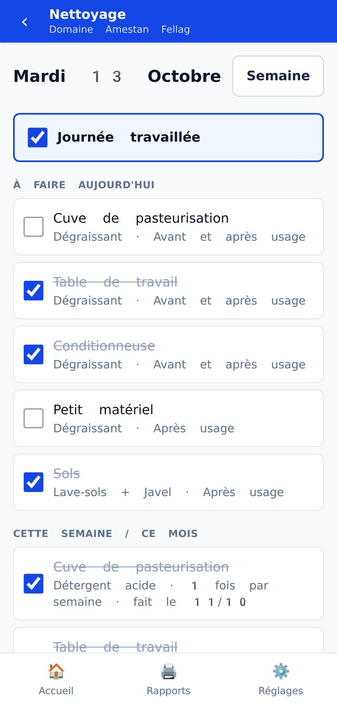
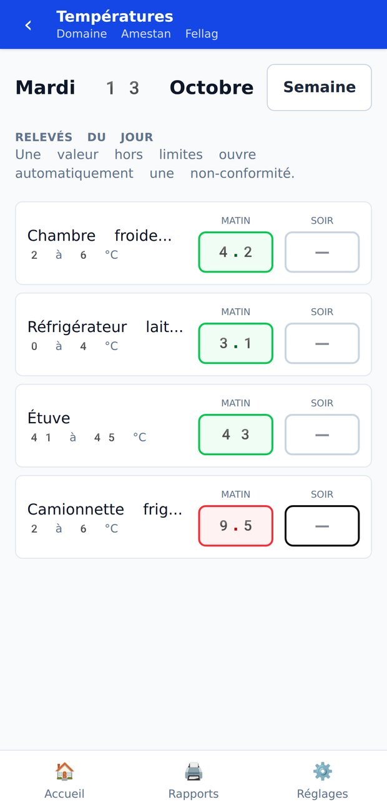
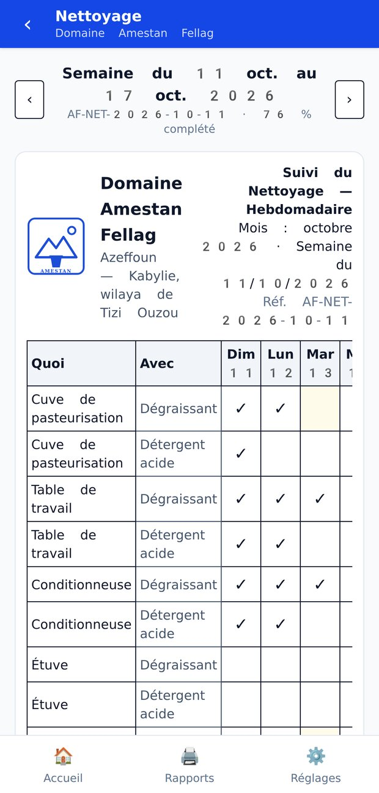

Hygiène
Le point de départ — suffit pour beaucoup d'établissements.
- Plan de nettoyage à cocher
- Fiches imprimables
- Non-conformités
- Mode contrôle
Les fiches de nettoyage, de températures et de non-conformités, remplies et prêtes pour le contrôle — sans papier, sans internet.
Azul ! Né en Kabylie, pensé pour les artisans algériens.
Vidéo sans son — démonstration à l'image.



Sans fiches à jour : amende de 50 000 à 1 000 000 DA (loi 09-03, art. 72) et obligation de procédures écrites (décret 17-140, art. 5). Zeddig les tient prêtes.
Le point de départ — suffit pour beaucoup d'établissements.
Pour les frigos et les chambres froides.
Option — pour ne plus rien relever à la main.
D'autres modules existent sur demande : huile de friture, plats témoins, étiquettes DLC, traçabilité, nuisibles, personnel…
Clé en main : un spécialiste vient chez vous, crée vos fiches au nom de votre entreprise, et vous forme en 1 h.
Dites-nous votre activité et votre wilaya : nous revenons vers vous rapidement.
✉ Demander un devisOu écrivez directement à fellagamestan@gmail.com